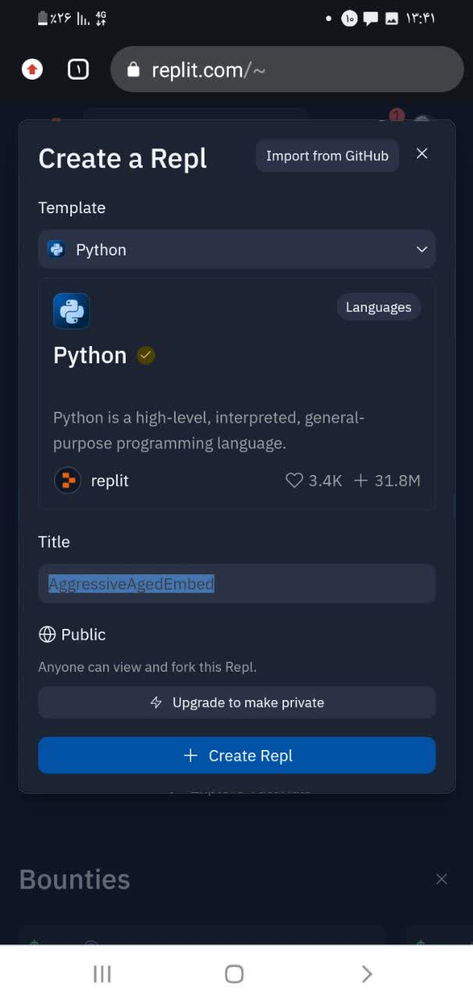
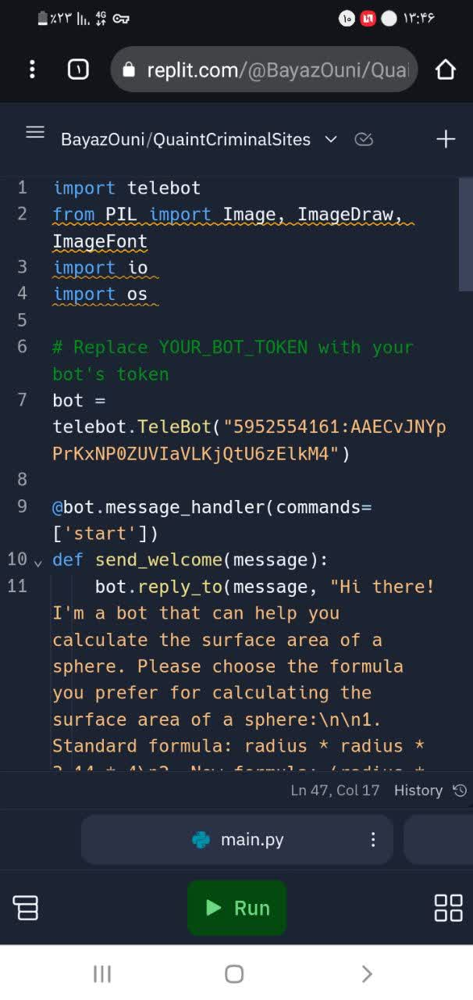

به نام خدا . اول از همه باید بگم من توی این پروژه ای که به شما اراِه دادم چند تا کار انجام دادم اول از همه فرمول جدید برای مساحت کره پیدا کردم و برای نشون دادن عملکرد این فرمول که جواب سوالات هم با فرمول جدید و هم با فرمول اصلی یکسان هست رو نشون بدم و بعد این وب سایت رو برای گذاشتن توضیحات کلی طراحی کردم pi*همونطور که میدونید فرمول اصلی مساحت کره اینه :شعاع *شعاع*4
(فرمول جدید : (قطر*3/14 * (قطر-1))+(قطر*3/14
این فرمول به ظاهر سخت تر از فرمول اصلی هست و کار رو پیچیده میکنه ولی اگه توضح بدم میبینید که راحت تر هست اول از همه برای محاسبه مساحت کره شعاع رو در اختیار ما میگذارند حالا ما شعاع رو ضربدر 2 کنیم قطر به دست میاد حالا ما قطر رو ضربدر عدد پی میکنیم که ما 3/14 در نظر میگیریم بعدش حاصل این قسمت رو نگه میداریم بعد تو پرانتز بعدی حاصل عبارت قبلی رو فقط کافیه ضربدر قطر منهای یک کنیم و با حاصل پرانتز اول جمع کنیم
در مرحله اول وارد سایت replit.com شدم که این سایت دارای هاست رایگان برای راه اندازی برنامه های مختلف از جمله ربات تلگرام هست
در مرحله دوم روی دکمه create repl کلیک میکنیم بعدش یک صفحه میاره که اینجا شما زبان برنامه نویسی خودتونو انتخاب میکنید و برای شما یک پروژه ایجاد میشه
حالا تو مرحله اخر فقط کافیه سورس کد هامون رو داخل فایل main.py بنویسیم یا اپلود کنیم بعدش روی دکمه run کلیک کنیم رباتمون راه اندازی میشه حالا رباتمون چطوری راه اندازی شد؟ از طریق توکن ربات که قبلا از بات فادر گرفتیم
حالا این ربات که میخوام بهتون معرفی کنم رو هم خودم ساختم منتها این ربات رو بدون کد نویسی و از طریق هاست رایگان سایت data space-canva راه اندازی کردم و این ربات محدودیت داره و به زبان فارسی هست و فقط مساحت کره هایی به شعاع یک تا ده رو محاسبه میکنه
نظرات